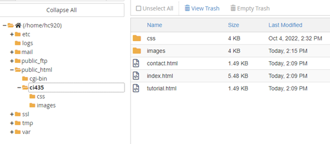
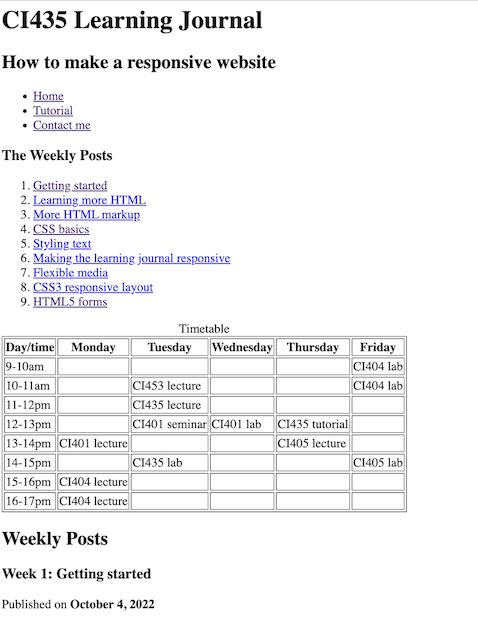
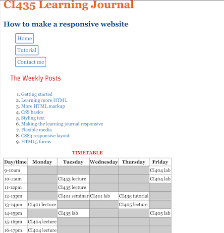
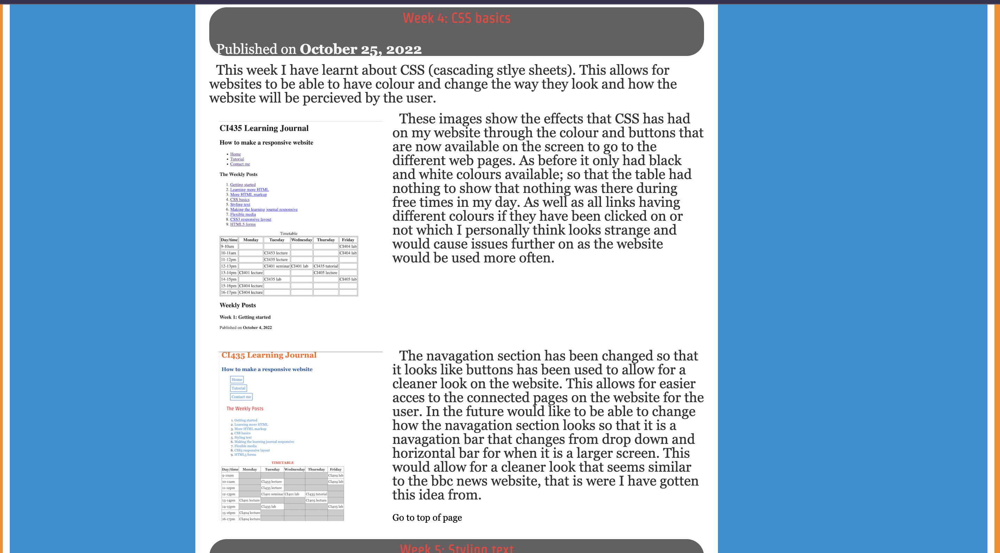
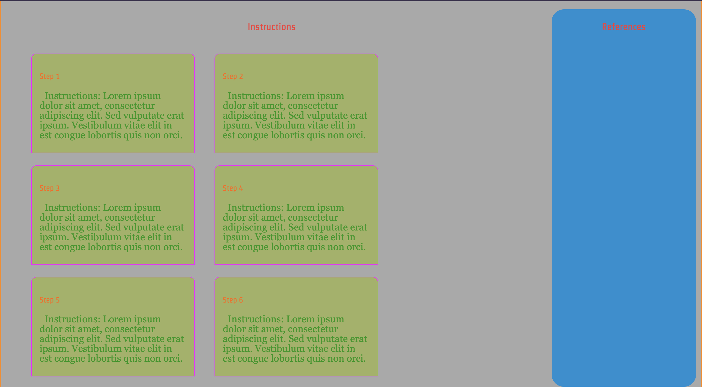
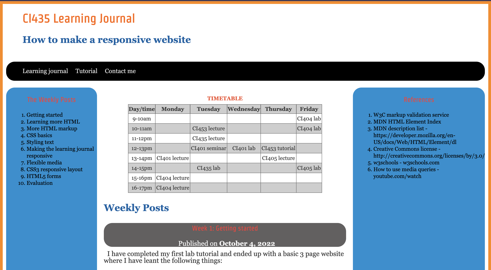
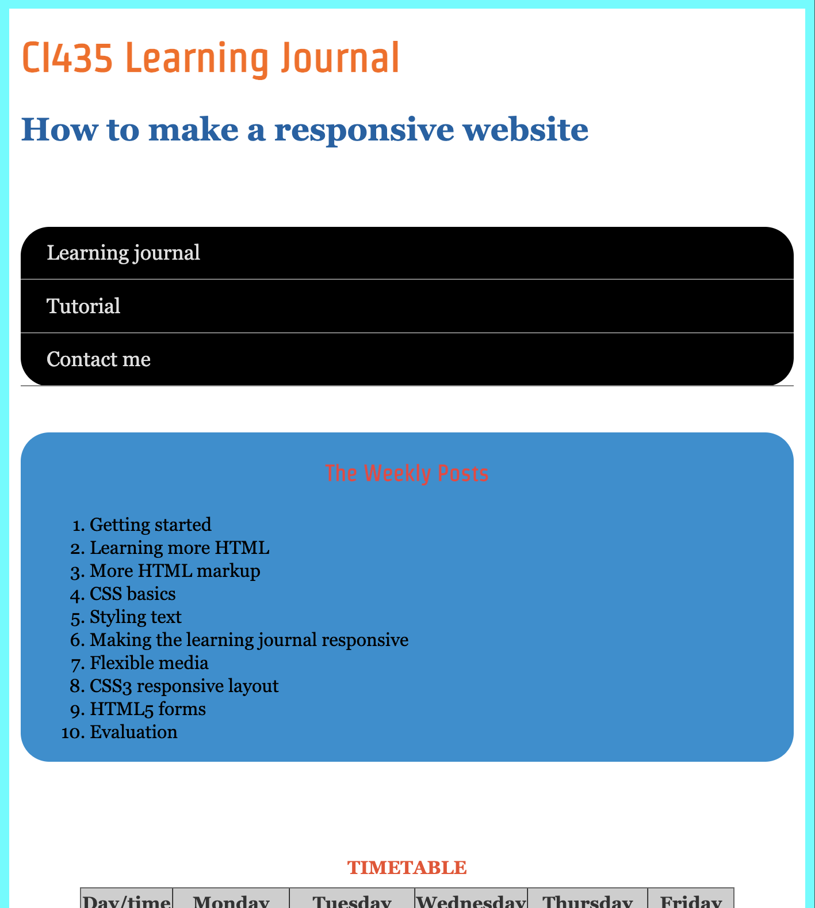

Week 1: Getting started
Published on
I have completed my first lab tutorial and ended up with a basic 3 page website where I have leant the following things:
- Set up the folders and files for my site on my workspace on the Brighton Domains web server
- Link two pages together with a navigation menu (relative link)
- Create links to external webistes (absolute link)
- Use h1 and h2 tags
- Edit the page title
- Validate HTML using the W3C validator
Week 2: Learning more HTML
Published on
I have completed my second lab tutorial. Ended with an image on my pages such as the one that can bee seen below.
This week I have learnt how to put the dates in the heading of each weeks post through learning about the "time" tag so this allows for the date to be shown in the correct fashion. Then moved on to learning about images and the "img" tag that allows for me to show images that I have stored in my images file on the website. As shown above, the image is of my files being organised and allows for controlled access to the right files so that I cannot accidentally call the wrong one when trying to do css but calling an image. Finally this week have learnt how to add email links so that in the footer there is a possibility to contact me about my website. This was possible through the "a href="mailto:myemailaddress" allowing for me to add a relative link to my email.
Go to top of pageWeek 3: More HTML markup
Published on
I have completed my third lab tutorial where i have learnt to create a table which can be seen below of my timetable. While also having learnt about the different type of lists that are available to use and how they are displayed. I have showed what i have learnt through the timetable being availble to be seen at the top of the website and different lists shown below.
Nesting a unordered list within an ordered list:
- Week 1
- Set up site folder
- Create index.html
- Create guide.html
- Link files in a lists for navigation
- Week 2
- Add posts and date
- Add named anchors
Description lists:
- HTML
- Hyper-text markup language - markup language used to structure content
- CSS
- Cascading stylesheets - used to define presentation of HTML elements
- JavaScript
- Scripting language for adding interactive behaviour to web pages
The W3C has made an HTML5 logo that you can add to your web page. The HTML5 logo is licensed under Creative Commons Attribution 3.0 and is free to use. This allows for me to create websites where a companies logo could be the link to their own website in the future.
Go to top of pageWeek 4: CSS basics
Published on
This week I have learnt about CSS (cascading stlye sheets). This allows for websites to be able to have colour and change the way they look and how the website will be percieved by the user.
These images show the effects that CSS has had on my website through the colour and buttons that are now available on the screen to go to the different web pages. Earlier it only had black and white colours available and the table showed nothing during free times in my day. As well as all links having different colours if they have been clicked on or not which I personally think looks strange and would cause issues further on as the website would be used more often.
The navagation section has been changed so that it looks like buttons has been used to allow for a cleaner look and aesthetic on the website. This allows for easier acces to the connected pages on the website for the user. In the future I would like to be able to change how the navagation section looks so that it is a navagation bar that changes from drop down and horizontal bar for when it is a larger screen. This would allow for a cleaner look that seems similar to the BBCS news website as that is were I have gotten this idea and inspiration from.
Go to top of pageWeek 5: Styling text
Published on
I have completed my fifth lab tutorial and in this week I learnt how to specify fonts that should also have back up fonts, as this allows for my website to be working no matter if the first choice font is not available in a certain browser. Also adding the google fonts through connecting via absolute link to google's free font library allows for me to choose from more fonts that are potentially fancier. While using fancier fonts for titles are eye catching they cannot be used for all text as they become hardier to read. This week have also learnt how to drop cap so that the first letter of the first word in the first paragraph is large then the rest of the normal size. This creates a book like effect with the text. This can be seen in the first paragraph from pride and prejudice below:
It is a truth universally acknowledged, that a single man in possession of a good fortune, must be in want of a wife. However little known the feelings or views of such a man may be on his first entering a neighbourhood, this truth is so well fixed in the minds of the surrounding families that he is considered as the rightful property of some one or other of their daughters.
Go to top of pageWeek 6: Making learning journal page responsive
Published on
While completing my sixth tutorial this week I have learnt the following things:
-
The three core responsive web development techniques
- Having a fluid layout
- CSS media queries
- Responsive media
- The viewpoint meta element
- How to make a responsive page to size of device
The fluid and suitable layout allows for the website to be viewed differently on different devices with different screen sizes. As for a phone with a very small screen the timetable item would disappear. While rearranging the screen and how parts are showen, allowing for the navagation bar changes from a drop down list to horizontal when the screen gets wider. This is something that allows for there not to be a side scroll within the website which is the worst thing that can be done on a website.
Go to top of pageWeek 7: Flexible media
Published on
During this week's tutorial have learnt the "alt = "text description of the image". This is a very important feature to add to images which allows for them to be availble on sites that are read only. Allowing for the website to be more responsive to how the webite can be accesed
I know how to show my work like this however for this project I have decided not to for how it looks and my personal preference of preferring it to be image then text. This is to allow for the image to be seen clearly showing the set difference that CSS has made to my website.
Go to top of page
Week 8: CSS3 responsive layout
Published on
After my eigth lab tutorial I was taught how to use the flexbox functions to create a different type of layout. The layout uses boxes that contain the content that can be displayed in a responsive way to how big the screen is.
I have also learnt how to display content on my website through two coloum displays so that there is the header of the text on the upper left side with text and photos in the columns. This allows for easy looking and reading as the length of the line is smaller so that the user is able to see the first and last word of the line without having to move their eyes. Which is important due to making the user's time on the website is very important. I have used this method of displaying content on my tutorial page as it looks very nice and with the images required to be displayed on the tutorial page means that the two coloumns are needed for one to be text and the other to hold the image.
Go to top of pageWeek 9: HTML5 forms
Published on
During this weeks lab session I learnt about forms and there different uses for websites, such as getting valuable information from the user. Also how styling of the forms can affect the users experience, as forms should be:
- Laid out clearly
- Consistent design throughout the website
- Clear guidance to user with feedback
The learning continued into now knowing about the different options that are available in forms such as text boxes, checkboxes, buttons and range meters. Each having their own specific functions that give vitual information from the user. Through learning about these different options i've managed to create my own form on the contact me page of the web site to include name and their information, what they have thought about my website and if they would like to recive more information about the website. This information that I will gather will not be stored through not having the aility to add javascript to store the information. However still have set my form to have required entries such as the name and email address of the user. With doing some independant study have found that leaving a placeholder within the box where neccessary is effective for the user and them knowing what to enter.
Go to top of pageWeek 10: Evaluation
Published on
In my final tutorial I managed to evaluate my project as a whole while making constant improvements throughout the weeks I have completed my website. Design of each page has been completed so that images have black boarders and videos with red borders, to show the clear differenec for the user. With also the contact me page having been done I updated the contact page so that the button clears what the user has entered, creating what I think is a cleaner look after as the form resets itself. I have checked the responsiveness of my website through different devices such as phones, tablets and laptops with each devive showing the correct output which can be seen below.
There are difference's within the laptop and phone version, such as the different backgrounds and layouts. These are needed for the size of the screens and the ability to read the text on screen would be difficult otherwise. The designs work well allowing the parts of the website to be displayed in ways so that the user has the best experience. Such as the referneces part moves to the bottom on the phone and the weekly posts moving above the body of the website. Also as the timetable will eventually disappear once the screen becomes to small so that it doesn't get distorted. This allows for the website to react accordingly and respond correctly to the size of the screen meaning the user has the best experience in the website.
In my website I have used the "div id" to tell my different pages apart so that I can have different layouts on them allowing more variation and responsiveness to my website. Through each page having independant layouts allows for each one to get their full potential from each design. Meaning the content can have maximum affect. As on the tutorial page I have the body taking up the majority of the screen as that is the main objective of the page, so that the user can learn the most about independant learning.
Below shows the valid CSS that I have used on my website, through the badge being there.